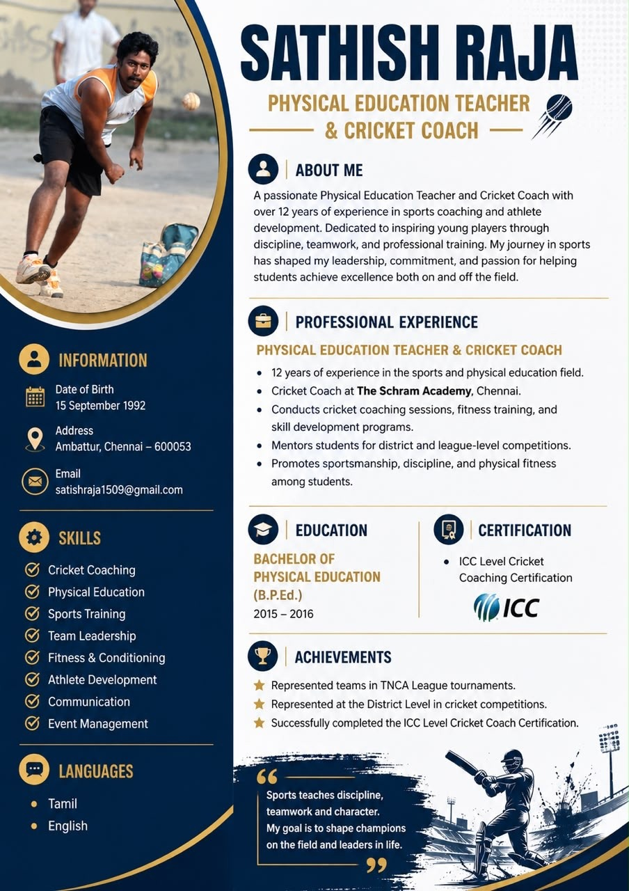

ABOUT THE OWNER
Leadership behind
Trichy Titans.
Satish Raja is a Physical Education Teacher and Cricket Coach with more than 12 years of experience in sports coaching and athlete development.

FOUNDING OWNERThe Schram Academy, Chennai
To develop disciplined, confident and technically strong young cricketers through professional franchise competition.
ABOUT THE OWNER
Satish Raja is a Physical Education Teacher and Cricket Coach with more than 12 years of experience in sports coaching and athlete development.
PROFILE HIGHLIGHTS
“Sports teaches discipline, teamwork and character. My goal is to shape champions on the field and leaders in life.”
FRANCHISE HUB
This page is ready for the final interview video, squad, sponsors, fixtures, photos and news.